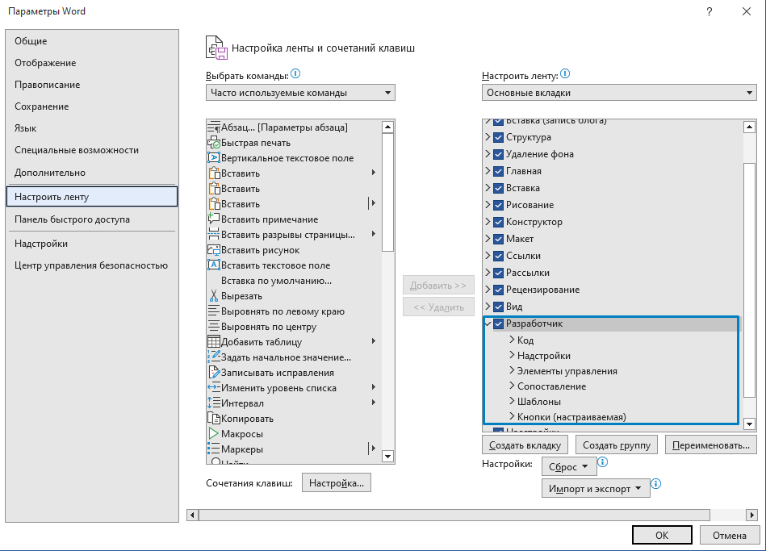
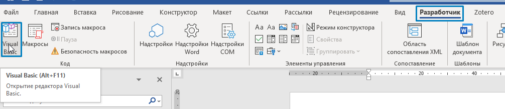
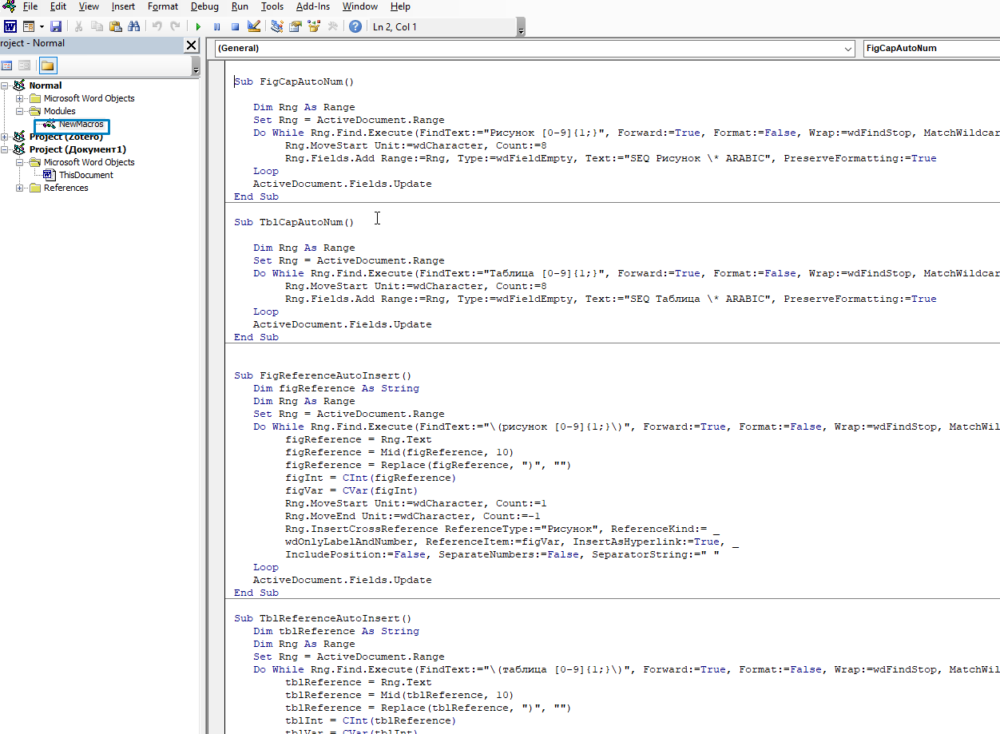
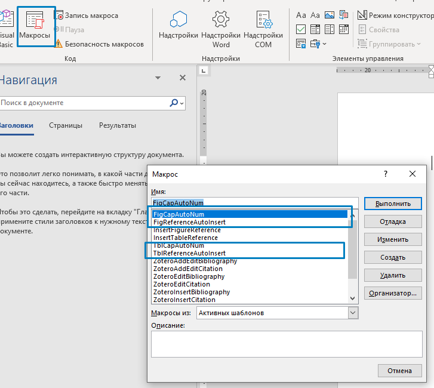

Постобработка
Сборка документа#
Время магии!
Запуск скрипта#
Документ собирается командным файлом .bat. Вот так он примерно выглядит внутри:
powershell.exe -command .\build.ps1 ^
-md demo-report-beginning.md,demo-main.md,demo-report-end.md ^
-template template-report.docx ^
-pdf report.pdf ^
-docx report.docx ^
-embedfonts ^
-counters
pause
Параметры:
-md-- список файлов через запятую, содержимое которых будет записано в результирующий файл. Они будут обрабатываться именно в том порядке, в котором здесь указаны. Можно указывать относительный путь, например вот так:.\subfolder\examples.md;-template-- файл docx, который будет использован в качестве шаблона-pdf-- название результирующего pdf файла. Если pdf не нужен (он долго выводится достаточно), то просто уберите эту строчку-docx-- название результирующего docx файла. Будет перезаписан, если существует-embedfonts-- включать ли шрифты в файл. Если включать, то файл получиться большим (от 4 МБ), если включать не нужно - то удалите эту строчку-counters-- счетчики - эта опция считает количество рисунков, таблиц, секций и нумерует все соответственноpause-- это просто чтобы окошко не исчезало сразу, и можно было ошибки посмотреть. Опция-mdможет получиться очень длинной, так что внимательно.
Для сборки документов запустите отредактированный .bat файл, и рядом с .bat появятся (или перезапишутся) собранные готовые файлы.
Предобработка#
Как вы помните, в нашей структуре файлов в каждой папке с .md есть папка _img, в которой хранятся картинки. В тексте .md ссылки на картинки - относительные, вида (_img/file.png). Скрипту build.ps1 нужно, чтобы все картинки размещались относительно его самого, а не относительно файла .md. Простейший способ решить эту проблему -- скопировать все картинки из дочерних _img в корневую относительно build.ps1. Для этого написан простенький скрипт на python, который:
- Получает все картинки
.jpg,.png,.bmp(можете добавить в скрипт свои форматы и расширения). - Сохраняет список картинок в
copied_files.json. Если встретились картинки с одинаковыми названиями, перезаписывать не будет, так что все картинки должны быть с разными названиями. - Копирует картинки в корневую папку.
- (Опционально) после сборки можно вызвать скрипт с флагом
-r, чтобы удалить копии картинок из корневой_img(чтобы не было дублирования).
Вызов скрипта можно добавить прямо в build-docs.bat:
@echo off
"C:\Python\Python310\python.exe" %~dp0\..\scripts_and_macros\copy_img.py -s "..\docs_gost" -d "..\docs_gost\_img" -c
@echo on
powershell.exe -command .\build.ps1 ^
-md .\report-beginning.md,.\01_setup\01_what_is_happening.md,.\01_setup\02_install.md,.\02_md_to_docx\01_folder_structure.md,.\02_md_to_docx\02_gd_examples.md,.\02_md_to_docx\03_build_doc_macro_final.md,.\03_md_to_web\01_build_web.md,.\03_md_to_web\02_remove_gd_tags.md,.\03_md_to_web\03_all_together.md,.\03_md_to_web\04_useful_plugins.md,.\03_md_to_web\05_pdf_thoughts.md,.\04_vscode_settings\01_setup_workspace.md,.\04_vscode_settings\02_tasks_snippets.md,.\report-end.md ^
-template template-report.docx ^
-pdf report.pdf ^
-docx report.docx ^
-embedfonts ^
-counters
@echo off
"C:\Python\Python310\python.exe" %~dp0\..\scripts_and_macros\copy_img.py -r
@echo on
Постобработка#
Хотя собранный документ по замыслу можно использовать прям как есть, все же требуется еще пара штрихов:
- Автонумерация для рисунков и таблиц.
- Перекрестные ссылки на нумерованные таблицы и рисунки.
Gostdown не использует в финальном файле автоматическую нумерацию, а вместо этого делает закладки и гиперссылки. Проблема тут в том, что если нужно отредактировать финальный файл или отдать его Заказчику для вставки в другой документ, то нумерация таблиц и рисунков поломается.
Для автоматической нумерации разработаны макросы, которые нужно добавить в шаблон Normal.dot.
Алгоритм макроса на автоматическую нумерацию:
- Ищем в документе все
Рисунок [0-9]{1;}иТаблица [0-9]{1;}(учитывается регистр), выделяем. - Заменяем на автоматическую нумерацию.
Аналогичного эффекта также можно добиться Поиском и заменой, если не хочется использовать макрос:
- Вставить название рисунка или таблицы (с автонумерацией).
- Правый клик по полю > Коды/значения полей (чтобы включить полное отображение поля).
- Выделить «Название» с полем и Ctrl + C.
- Вызывать диалог Find/Replace.
- Отметить галку «Подстановочные знаки».
- В поле «Найти» вставить:
Рисунок [0-9]{1;}или (Рисунок ([0-9]{1;})для группы), ну и Таблица для таблиц. - В поле «Заменить» Специальный > содержимое буфера обмена (или ^c).
- Заменить все.
- Обновить поля.
Код макроса:
Sub FigCapAutoNum()
Dim Rng As Range
Set Rng = ActiveDocument.Range
Do While Rng.Find.Execute(FindText:="Рисунок [0-9]{1;}", Forward:=True, Format:=False, Wrap:=wdFindStop, MatchWildcards:=True, MatchCase:=True) = True
Rng.MoveStart Unit:=wdCharacter, Count:=8
Rng.Fields.Add Range:=Rng, Type:=wdFieldEmpty, Text:="SEQ Рисунок \* ARABIC", PreserveFormatting:=True
Loop
ActiveDocument.Fields.Update
End Sub
Sub TblCapAutoNum()
Dim Rng As Range
Set Rng = ActiveDocument.Range
Do While Rng.Find.Execute(FindText:="Таблица [0-9]{1;}", Forward:=True, Format:=False, Wrap:=wdFindStop, MatchWildcards:=True, MatchCase:=True) = True
Rng.MoveStart Unit:=wdCharacter, Count:=8
Rng.Fields.Add Range:=Rng, Type:=wdFieldEmpty, Text:="SEQ Таблица \* ARABIC", PreserveFormatting:=True
Loop
ActiveDocument.Fields.Update
End Sub
А вот с перекрестными ссылками так просто поиском и заменой уже не получится, поэтому только макрос. В макросе захардкожены ссылки на рисунки вида (рисунок N) с учетом регистра, т.е. в тексте это выглядит как на рисунке ниже (рисунок N). Алгоритм макроса:
- Удаляем гиперссылки с текстом, содержащим
fig:иtbl:. - Находим все
(рисунок N)/(таблица N). - Обрезаем скобки.
- Обрезаем номер рисунка/таблицы.
- Заменяем текст на перекрестную ссылку функцией InsertCrossReference с номером, который выдрали на шаге 4.
Код макроса (убедитесь, что при вставке в Word VBA не побилась кодировка):
Sub FigReferenceAutoInsert()
Dim figReference As String
Dim oField As Field
For Each oField In ActiveDocument.Fields
If oField.Type = wdFieldHyperlink Then
If Mid(oField.Code, 16, 4) = "fig:" Then
oField.Unlink
End If
End If
Next
Set oField = Nothing
Dim Rng As Range
Set Rng = ActiveDocument.Range
Do While Rng.Find.Execute(FindText:="\(рисунок [0-9]{1;}\)", Forward:=True, Format:=False, Wrap:=wdFindStop, MatchWildcards:=True, MatchCase:=True) = True
figReference = Rng.Text
figReference = Mid(figReference, 10)
figReference = Replace(figReference, ")", "")
figInt = CInt(figReference)
figVar = CVar(figInt)
Rng.MoveStart Unit:=wdCharacter, Count:=1
Rng.MoveEnd Unit:=wdCharacter, Count:=-1
Rng.InsertCrossReference ReferenceType:="Рисунок", ReferenceKind:= _
wdOnlyLabelAndNumber, ReferenceItem:=figVar, InsertAsHyperlink:=True, _
IncludePosition:=False, SeparateNumbers:=False, SeparatorString:=" "
Loop
ActiveDocument.Fields.Update
End Sub
Sub TblReferenceAutoInsert()
Dim tblReference As String
Dim oField As Field
For Each oField In ActiveDocument.Fields
If oField.Type = wdFieldHyperlink Then
If Mid(oField.Code, 16, 4) = "tbl:" Then
oField.Unlink
End If
End If
Next
Set oField = Nothing
Dim Rng As Range
Set Rng = ActiveDocument.Range
Do While Rng.Find.Execute(FindText:="\(таблица [0-9]{1;}\)", Forward:=True, Format:=False, Wrap:=wdFindStop, MatchWildcards:=True, MatchCase:=True) = True
tblReference = Rng.Text
tblReference = Mid(tblReference, 10)
tblReference = Replace(tblReference, ")", "")
tblInt = CInt(tblReference)
tblVar = CVar(tblInt)
Rng.MoveStart Unit:=wdCharacter, Count:=1
Rng.MoveEnd Unit:=wdCharacter, Count:=-1
Rng.InsertCrossReference ReferenceType:="Таблица", ReferenceKind:= _
wdOnlyLabelAndNumber, ReferenceItem:=tblVar, InsertAsHyperlink:=True, _
IncludePosition:=False, SeparateNumbers:=False, SeparatorString:=" "
Loop
ActiveDocument.Fields.Update
End Sub
Чтобы использовать этот код, необходимо в Microsoft Word активировать панель разработчика (рисунок ), вызвать лист VBA (рисунок ) и вставить код (рисунок ).



А затем запустить макрос (рисунок ).

Вот теперь у нас действительно классный docx.